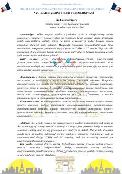

AKAyollar kiyimlarini tikish jarayonlari va zamonaviy texnologiyalar tahlili.
Ushbu maqolada ayollar kiyimlarini tikish texnologiyasining asosiy jarayonlari, zamonaviy texnologiyalari va trendlari ko'rib chiqiladi. Kiyim dizaynidan tortib materiallarni tanlash, kesish va tikish jarayonlariga qadar bo'lgan bosqichlar batafsil tahlil qilinadi.